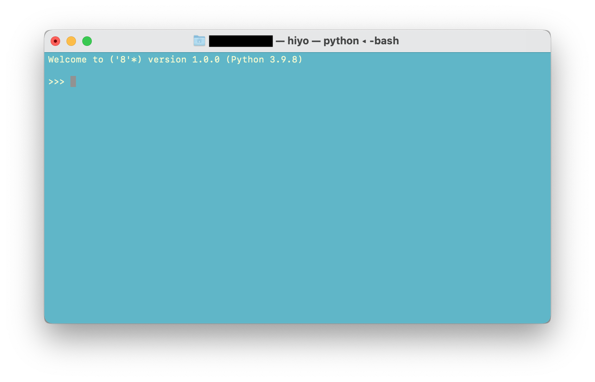

この言語を動作させるためには以下の環境が必要です。
intelプロセッサ、Appleシリコンどちらでも動作可能です。
$ arch ; uname -m
arm64
arm64
$ arch ; uname -m
i386
x86_64
また、macOS Monterey で作成されています。
( ' 8 '*)のEBNFと構文図式は以下の通りです。
EBNFと構文図式(別のページへ)構文図式のみの画像は以下の通りです。
-bnf.png)
この言語のソースコード一式はGithub PL-Processing-Systemにあります。
上記よりすべてクローンしてきた状態で以下の作業を進めます。ダウンロードしてきたディレクトリPL-Processing-Systemへ移動し、カレントディレクトリを以下の状態にします。
$ pwd ~/Downloads/PL-Processing-System
なお、ディレクトリの位置は~/Downloadsではなくても好きな場所に置くことができます。次に中身を確認します。
$ls -1
Document
Hiyo.app
Makefile
README.md
bnf
hiyo
hiyo-vm-design.asta
main.py
parser
pylintrc.txt
report
test_txt
拡張属性を落とします。
xattr -cr ./
ここからはmakeコマンドを使ってアプリケーションの準備を行います。
make prepare
と打って、
command not found: make
と出力される場合は、Command line tools for Xcode をインストールします。このインストールにはかなりの時間がかかる可能性があります。
$ xcode-select --install
以下のコマンドを打ち込み、以下の結果が返ればmakeコマンドが正しくインストールされています。
$ which make
/usr/bin/make
インストールができている場合は上記の
make prepare
を実行してください。
この言語を使用するために必要なものがインストールされます。次に、アプリケーションをインストールさせます。
make install
これでアプリケーションが使用できるようになります。アイコンをダブルクリックするか、
make open
で開くことができます。アプリケーションからではなく、ターミナル上でそのまま実行する際は、
make test
と打ち込んでください。いずれも以下のようにターミナルにプロンプタが表示されます。

各自のターミナルの設定によりターミナルのデザインが異なりますが、画像のような文字列が表示されれば正しく動いています。
>>> の後にプログラムを入力していきます。
終了させるには Controlキーとdキーを同時に押して終了させます。
アプリケーションを起動できたら実際に書いてみましょう。
変数の定義は以下のように記述します。
<変数名> ~ | <値> |
例えば🌷に2022という数を束縛するには、
🌷 ~ | 2022 |
と書きます。値ではなく、2022という文字列を指定したい場合はシングルクォートで挟みます。
🌻 ~ | '2022' |
プロンプタ( >>> )に入力しましょう。
>>> 🌷 ~ | 2022 |
>>> 🌻 ~ | '\'2022'\' |
では束縛した値がきちんと定義できたかみてみましょう。値の中身を見るには
📝 ( <変数名> )
と書きます。では入力してみましょう。
>>> 📝 ( 🌷 )
2022
>>> 📝 ( 🌻 )
2022
見かけ上は同じですが数値と文字列、それぞれ定義されています。確かめるために演算をおこなってみます。
>>> 📝 ( 🌷 + 11 )
2033
>>> 📝 ( 🌻 + '\'年度'\' )
2022年度
逆を行うと、エラーになります。
>>> 📝 ( 🌷 + '\'年度'\' )
id '年度'' is not defined.
>>> 📝 ( 🌻 + 11 )
syntax error at 1: nearby "11"
このように数値同士または文字列同士は足し算を行うことができます。ちなみに、数値では
>>> 📝 ( 🌷 - 22 )
2000
このように引き算も可能です。また、繋げて計算をすることもできます。
>>> 🎁 ~ | 2 + 3 - 4|
>>> 📝 ( 🎁 )
1
>>> 📝 ( 2 + 3 - 4 )
1
>>> 📝 ( 🎁 + 🌷 )
2023
文字列にシングルクォートを入れたい場合は以下のようにエスケープを行なってください。
>>> 🐬 ~ | '美しい\'日本の海\'' |
>>> 📝 ( 🐬 )
美しい'日本の海'
文字列にチルダを入れたい場合も同じようにエスケープを行なってください。
変数名には絵文字の他にも日本語や英語など様々な文字を指定できます。
それでは楽しい( ' 8 '*)との時間をお過ごしください！
pythonによる仮想マシンのメトリクスを以下に示します。このメトリクスは基本メトリクスに沿った項目を採用しています。LOCはあるクラスのソースコードの行数、NOAはあるクラスの属性の数、NCVはあるクラスのクラス変数の数、NIVはあるクラスのインスタンスの数、NOMはあるクラスのメソッドの数、NCMはあるクラスのクラスメソッドの数、NIMあるクラスのインスタンスメソッドの数を表します。
| Program | LOC | NOA | NCV | NIV | NOM | NCM | NIM |
|---|---|---|---|---|---|---|---|
| hiyo.source_to_tree | 62 | 1 | 0 | 1 | 3 | 0 | 3 |
| hiyo.vm.hiyo_vm.executer | 149 | 3 | 0 | 3 | 3 | 0 | 3 |
| hiyo.vm.hiyo_vm.id | 59 | 1 | 0 | 1 | 5 | 0 | 5 |
| hiyo.vm.hiyo_vm.tree_transformer | 62 | 3 | 1 | 2 | 27 | 0 | 27 |